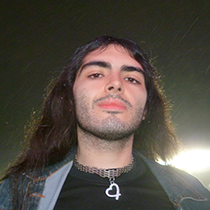
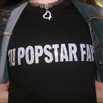
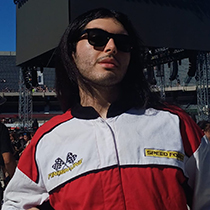
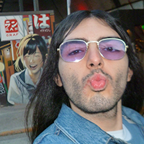
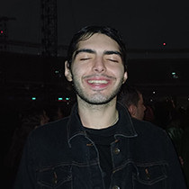
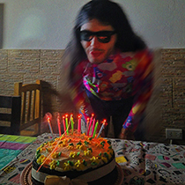
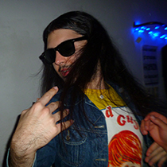
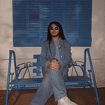
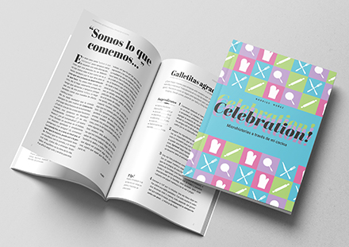
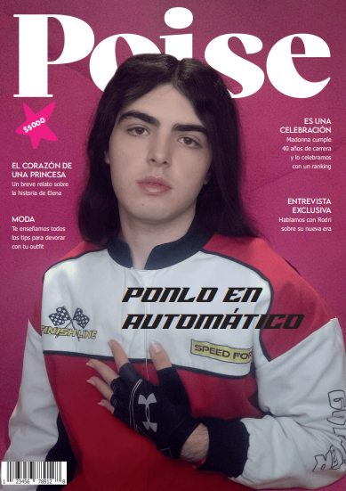

Rodrigo Ezequiel Nuñez

¡Hola! Soy Rodrigo, pero todos me dicen rodri. Soy estudiante de la Licenciatura en Diseño y Comunicación Visual en la Universidad Nacional de Lanús. Soy un apasionado del diseño, la comunicación y la cultura pop. Me inspiran los colores, la moda, la música y las películas para crear ideas y proyectos audiovisuales que conecten con el público.
También disfruto cocinar, explorar nuevos sabores y combinar creatividad y funcionalidad, comprometerme con lo que hago y buscar siempre crecer, aprender y dar lo mejor de mí. No me conformo con hacer las cosas de manera superficial: valoro la dedicación, la práctica y la mejora constante.
Experiencia
- Auxiliar Docente de la materia Comunicación de la carrera Diseño y Comunicación Visual de UNLa (2025-presente)
- Organizador de Eventos Multitudinarios (2022-2023; 2024-presente)
- Gestor y Técnico de Proyectos Audiovisuales (2020-presente)
- Diseñador Freelance (2017-presente)
Conocimientos
- Nivel de Inglés Avanzado
- Adobe InDesign
- Adobe Photoshop
- Adobe Illustrator
- Edición de Video
- Cocina Gourmet
- Pastelería fina y tradicional
- Manejo de Google G Suite
- Fotografía
- Gestión de Redes Sociales
- Manejo de Indumentaria
Habilidades
- Comunicación bilingüe efectiva
- Trabajo en equipo
- Resolución de problemas
- Creatividad
- Resistencia en la pista de baile
- Adaptabilidad
- Liderazgo
- Gestión del tiempo
- Pensamiento lateral
- Buena predisposicón
Formación
- Licenciatura en Diseño y Comunicación Visual - Universidad Nacional de Lanús (2021-Presente)
- Certificado de seis niveles de Inglés - Instituto de Cultura Inglesa de Remedios de Escalada (2019-2023)
- Bachillerato en Ciencias Sociales - Colegio San Francisco Javier (2015-2020)
Galería de fotos








Ver MásNota exclusiva
La Ética de la Pista de Baile
Después de casi dos años volvemos a los iconos. En esta nueva nota exclusiva para Poise Magazine, rodri, nuestra popstar fav, nos cuenta su devoción por la nueva ética que rige su vida, proyectos y vínculos: Everybody get up and dance!
El reencuentro
poise: Hola rodri, ¿cómo estás? Hace mucho que no nos veíamos, ¿qué tal todo? Me gusta tu outfit [Lleva puesta una camiseta manga corta de las chicas superpoderosas, es color blanca con mangas rosa furioso, acompaña con una campera de los mismos colores con una pequeña lunita en el pecho, un jean oxford azul oscuro le acentúa la silueta y para completar el look unas zapatillas blancas altas; su cabello impoluto, lacio y brillante]
rodri: Hola, buenas tardes. Gracias, estoy intentando volver al rosa, lo tenía bastante abndonado, en especial ahora que hay tanta masculización forzada en todos lados, hay que abrzar lo real, no la pose. —Se acomoda en la silla y sonrie—. Ahora ustedes también están en la digitalidad, en el mundo virtual —dice, abriendo los ojos de manera sarcástica, muy fiel a su estilo —. ¿Ya nadie lee revistas en físco? Perdón, me corrijo: ¿ya nadie lee nada en físico? Yo soy de la vieja escuela. Me gusta que las cosas sean reales, tangibles, que se puedan tocar y sentir. Por eso, aunque me encanta la tecnología y las redes sociales, sigo prefiriendo los libros, los discos y las revistas en físico. Me gusta ser dueño de las cosas, o al menos sentirme así.
poise: Te veo muy bien, la última entrevista que tuvimos fue hace casi dos años, más o menos por estas fechas, ¿Te acordás?
rodri: Gracias. Sí, claro que me acuerdo. Fue en la primer portada que hice para la revista, en ese momento en papel, cuando la gente no tenía conversaciones con inteligencias artificiales, ahora estamos en la nube, en el ciberespacio, somos todos un concepto... farmeamos aura —dice, girando los ojos y haciendo una mueca se rie—. Fue un momento muy especial para mí, y me alegra que lo recuerdes. Venía de estar muy en una, pero como ya sabés aprendí un montón de cosas y como que transmuté todo lo malo en algo positivo, lo metabolicé para bien.
poise: ¿Y qué estuviste haciendo desde entonces?
rodri: Me ofende un poco tu pregunta porque estuve apareciendo en todos lados, pero la voy a tomar de manera retórica. O sea, sin ir más lejos tuve tres #1* [en total acumula siete]. Pero respondiendote, desde entonces estuve trabajando en nuevos proyectos y explorando nuevas formas de expresión artística. La pista de baile es mi pasión, pero ya saben que me interesa el diseño, la moda, la cocina, las películas y la cultura pop en general. Me gusta estar siempre aprendiendo y creciendo como artista y por supuesto como persona también. Además, ¿¡qué se hacen los boludos si ustedes estuvieron publicando mis editoriales!? —suelta una cacajada estridenete y bebe un sorbo de agua, ahora en su nueva botella de Hello Kitty, reemplazando a la de las princesas de la primera entrevista—. *el conecpto de #1 en una carrera universitaria es referido a las materias que se promocionan con nota final 10.
poise: Nosotros si sabemos qué estuviste haciendo, pero el público se renueva y capaz algún que otro despistado te perdió un poquito el hilo.
rodri: Sí, es cierto. Pero no me preocupa demasiado, porque sé que mi público es fiel y siempre me acompaña. Además, estoy muy contento con los nuevos fans que se sumaron a mi comunidad. Me encanta poder compartir mi música y mi arte con ellos y ver cómo se conectan con lo que hago. Es una sensación increíble. Love sensation, good vibration, love sensation...

El amor por una referente
poise: Obviamente ya escuchaste Confessions II ¿Qué te pareció?
rodri: Imaginate que me fui hasta Av. Córdoba solo a las ocho de la mañana a robarme un cartel de Madonna —se rie y se cubre la boca con la mano—. Fue el día del partido contra Inglaterra, entonces como que no le importó mucho a la gente verme caminar con una trincheta en la mano y un cartel de 1 metro x 70. ¡Las cosas que hago por amor! El disco me pareció alucinante, muy completo, más confesada que en el primero. Tiene de todo, están todas las Madonnas de todas las épocas, es un disco muy introspectivo porque recorre toda su vida y trayectoria, habla de cosas de las que ella nunca habló, tiene canciones para todo. Estaba asustado con el disco y al mismo tiempo le tenía muchas expectativas.
poise: ¿Asustado? ¿Por Qué?
rodri: ¡Porque es Madonna! No hay nadie a quien admire más, ella me acompaña desde hace muchos, muchos años, (desde los doce) y viste cuando sos adolescente como que vivís los fanatismos con más pasión. No me tocaron grandes épocas artísticas de ella entonces con todo lo de este disco decía "qué paja, le van a romper los ovarios otra vez, no tiene que demostrarle nada a nadie" y la critica siempre fue muy mala con ella, terriblemente cruel, y para mi leer todo eso es como que te bardeen a tu mamá, no está bueno.
poise: Me parece que tenes una relación parasocial con Madonna.
rodri: Sí, la verdad que sí. Tengo una relación parasocial con ella. Hay gente que la tiene con Messi, otros con Taylor Swift, yo la tengo con Madonna.
poise: ¿Qué es lo que más te gustó del disco?
rodri: Me gusta mucho que Stuart Price esté de vuelta como productor. También la última frase de Everything porque conecta con toda la esencia de Love Sensation. Amé L.E.S Girl, me parece de las canciones más lindas que compuso Madonna, lo mismo con One Step Away, me parece que contiene verdades de la vida, de la existencia. Me inspira que ella siendo una mujer de casi 70 años todavía quiera seguir de joda, divirtiendose, pasandola bien. Tiene ganas de vivir, eso me parece admirable de cualquier ser humano en el presente y más de alguien que las pasó todas como ella. Ella siempre fue fiel a lo creía, incluso cuando todos le decían que estaba equivocada o intentaban humillarla, pero el tiempo le dio la razón. La admiro por eso hoy, pero hay muchos otros motivos.

Una filosofía bailable
poise: ¿Qué es La ética de la pista de baile?
rodri: Es un concepto que me inventé el cuatrimestre pasado y que tiene que ver con la idea de que la pista de baile es un espacio sagrado (como menciona madonna en uno de los tracks del nuevo álbum). La gente piensa que me drogo, pero es irónico que ni siquiera probé los cigarrillos de tabaco. Todas estas ideas surgen espontáneas, lo juro.—Hace una pequeña pausa y agrega entre pequeñas risas y una mueca de "no entiendo"— Debe ser mi aura de superestrella, de rock star, porque el rock es una cuestión de actitud. En fin, estabamos en clases de ética con la maravillosa Adelaida (adelaida te adoro) y me puse a analizar las éticas que nos dieron en clase (Aristóteles, Kant, el funcionalismo, etc) y pensé en que cada una tenía lo suyo, pero ninguna me terminaba de completar, entonces me puse a filosofar en mi mente sobre el tema y dije "mi ética es la de la pista de la baile porque sirve como metáfora de la vida". Es como la vez número veinte mil que digo la palabra "vida" en la entrevista, perdón. Parezco Rosalía cuando habla de Dios.
poise: ¿Y en qué consiste esa ética?
rodri: Consiste en que la pista de baile es, como dije, una metáfora de la vida. O sea, cuando vas a bailar no sabes qué canción va a seguir, capaz es una que no te gusta mucho, una que no conoces o puede ser una que te encante y que te sepas hasta la coreo, lo importante es que estás ahí con buena onda, dandolo todo, divirtiendote, pasandola bien. Puede ser que venga uno a encararte, a querer sacarte de tu trance ritualistico, pero está en vos cortarle menos diez y darle entidad o no. También hay momentos de descanso en la pista, donde vas a tomar algo, te sentas, vas al baño a peinarte o a dar una vueltita por ahí a ver qué onda. También puede pasar que vos re estás dandolo todo ahí pero los que te acompañaron necesitan sentarse un ratito, incluso habrá alguno que se quiera ir, y está bien, hay que dejar a la gente hacer lo que siente, pero no pegues tu deseo al del otro, si vos querés bailar entonces bailá. Express yourself, don't repress yourself.
poise: ¿Esa es la guía moral y ética con la que vivís hoy?
rodri: Sí. Incluso habrá veces que nadie quiera ir a la pista con vos y si tenes muchas ganas de estar ahí ¿por qué te lo perderías por los demás? Hoy esa ética rige mi vida: no importa qué esté haciendo o qué esté pasando alrededor, voy a hacer todo con ganas, energía, onda, no voy a dar más de lo que recibo, la reciprocidad es muy importante, eso aprendí con el tiempo. No quiero ni voy a parar por nada ni por nadie. lo más importante de "seguir bailando" es que, aunque sea dificil y no me fascine (como programar) siempre voy a intentar divertirme, aprender y pasarla bien con lo que esté haciendo. Y por supuesto siempre dando lo mejor, hacer un buen trabajo con el que me sienta conforme, si hay algo que detesto es la mediocridad. Hoy parece que a nadie le importa nada, pero a mi si me importan las cosas.
poise: Eso es genial, te felicito. Capaz ahora en Poise nos convertimos en tus DJs ¿Qué otras cosas estuviste descubriendo?
rodri: Pareces un psicólogo felicitandome así —se ríe y se acomoda en la silla, luego bebe otro sorbo de agua—. Cuando quieran pueden ser mis Mister DJ; Este tiempo fue un completo glow-up mental, laboral y social. Le digo gracias a la vida, al universo, a la gente que me rodea y sobre todo a mi mismo. Estuve descubriendo un montón de cosas. Por ejemplo lugares fabulosos, pelis fantásticas [es muy fan de los films], libros interesantes, música maravillosa y mucha gente divina, real sobre todo, que me aprecia y que aprecio mucho como... para leer la entrevista completa en la página de Poise hace click acá